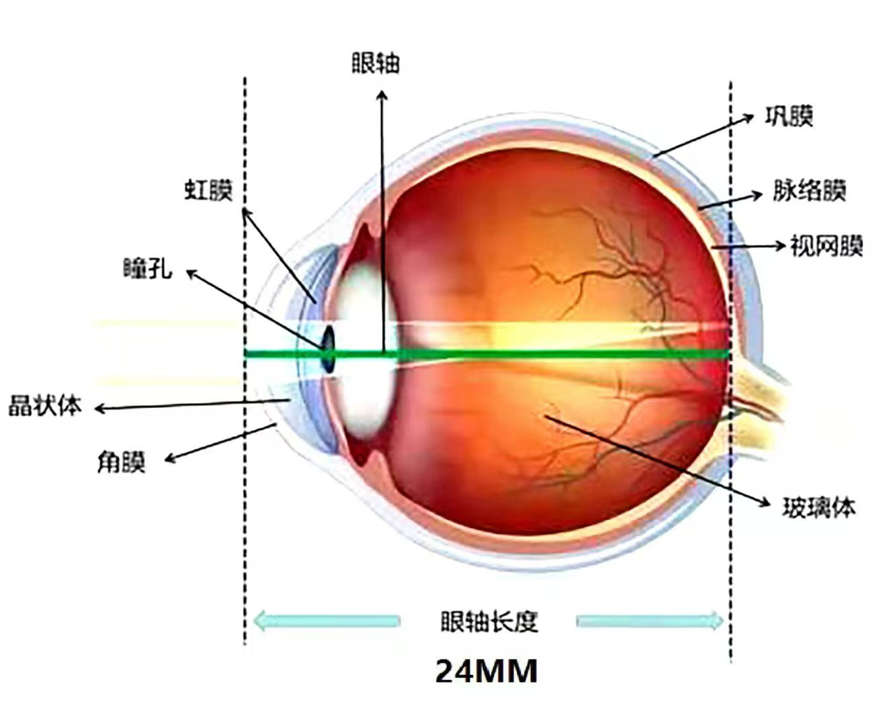
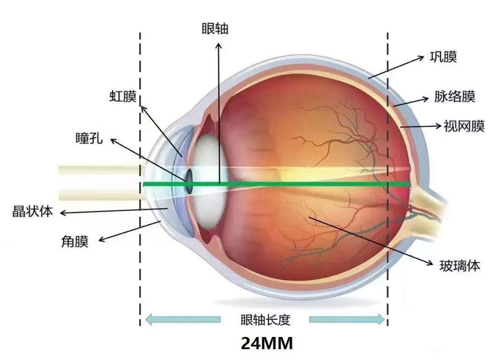
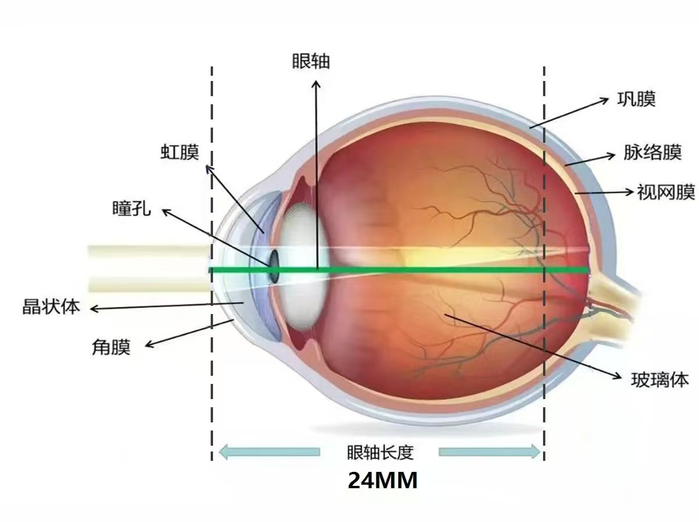
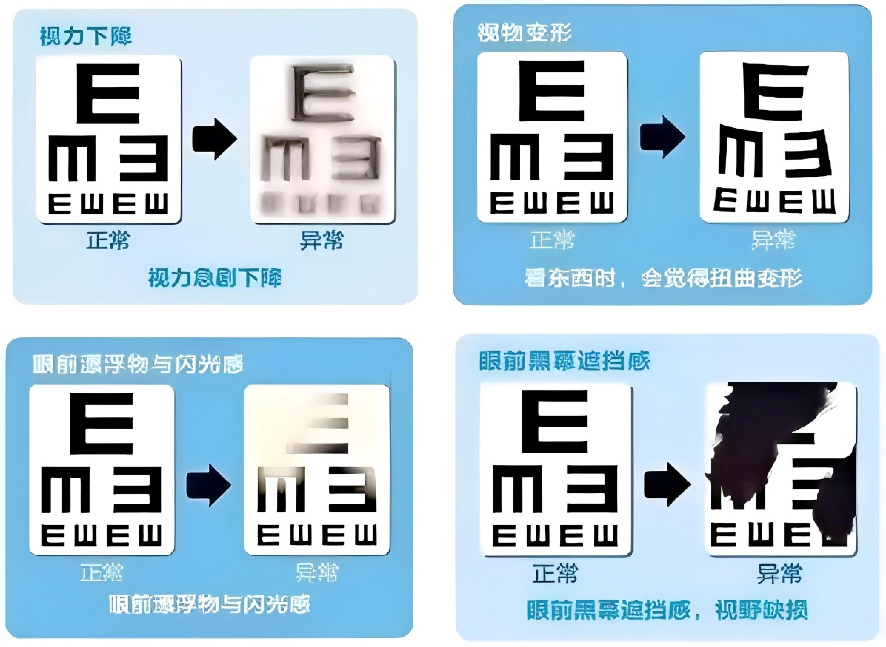
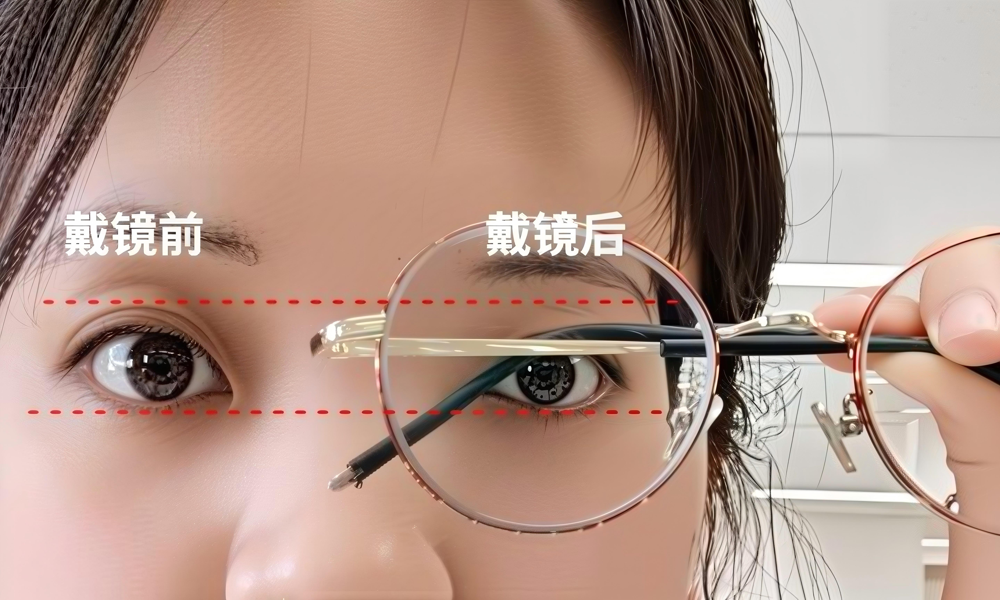
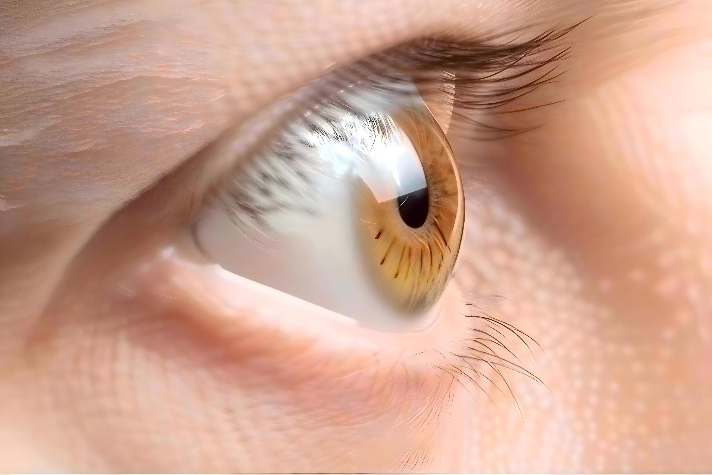
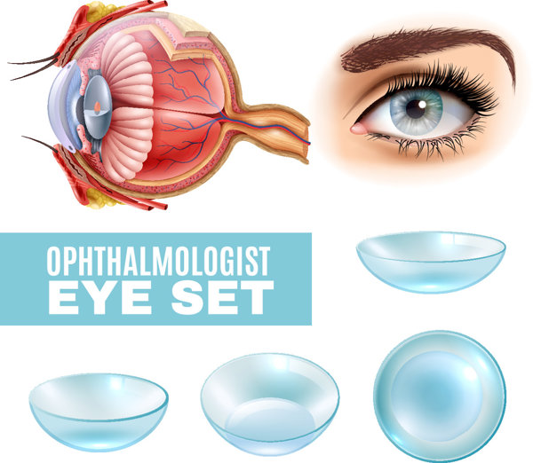
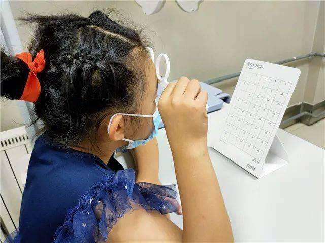
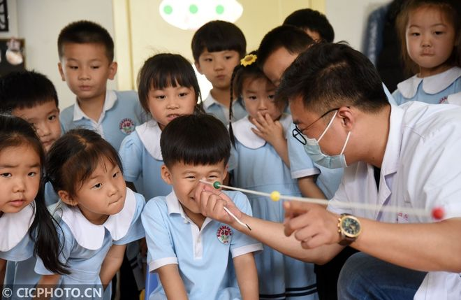
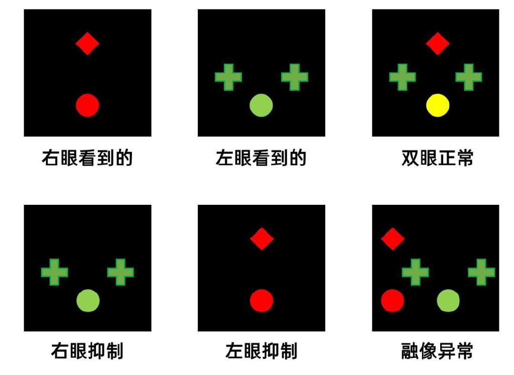

近视防控的重要性
近视的成因
近视主要由遗传因素、环境因素和用眼习惯共同作用形成。
遗传因素约占50%，环境因素如近距离用眼时间过长、户外活动不足等也起到重要作用。
我国青少年近视现状
数据来源：《中国学生近视防控白皮书》（2024年），国家卫健委《全国儿童青少年近视情况调查》
核心观点
科学护眼可有效延缓度数加深。通过合理的用眼习惯、充足的户外活动以及适当的医学干预，可以显著减缓近视发展速度。
💡 护眼小贴士
每天至少2小时户外活动，每用眼20分钟远眺20英尺外的物体20秒，保持良好的读写姿势，定期检查视力。

预测结果
| 年龄 | 不干预 | 25%防控 | 50%防控 | 75%防控 | 90%防控 |
|---|
📈 不同防控措施下的度数发展趋势
眼轴长度对比
正常眼轴
正常眼轴长度约为23.5-24mm
近视眼轴
近视眼轴延长至24-26mm
高度近视眼轴
高度近视眼轴超过26mm
高度近视的危害
300度以内

眼底结构基本正常，轻微豹纹状改变
300-900度

豹纹状眼底随光度增加逐渐明显，可能出现后巩膜葡萄肿
900度以上

萎缩性眼底，视网膜变薄，易发生病变
并发症风险预警
青光眼风险
正常眼压范围：10-21mmHg，超过24mmHg需警惕
青光眼风险计算器
请输入当前度数： 度
视网膜脱落风险
高度近视是视网膜脱落的重要危险因素
600-900度：风险增加10倍以上
900度以上：风险增加30倍以上
其他并发症
视网膜下新生血管：发生率5%-40%
后巩膜葡萄肿：发生率高达77.1%
视网膜萎缩/出血/脱离：随度数增加风险递增
遗传风险：父母均近视子女患病率显著提高

外观影响
眼睛变小
长期高度近视导致眼部结构改变
眼球突出
眼轴延长导致眼球前后径增大
眼神无光
眼底病变影响视觉质量
近视对于学业和工作的影响
📚 学业影响
- 学习效率下降近视导致视疲劳，注意力难以集中，影响学习效率
- 专业选择受限军校、警校、飞行技术、航海技术等专业对视力有严格要求，高度近视可能无法报考
- 学习成绩受影响视功能异常可能影响阅读速度和理解能力，进而影响整体学习成绩
💼 职业影响
- 就业限制飞行员、警察、军人、运动员等职业对视力要求较高，近视可能成为入职障碍
- 工作表现长时间使用电脑或精密仪器工作的人员，近视可能加剧视疲劳，影响工作效率
- 职业发展某些精细操作岗位对视力要求极高，高度近视可能限制职业发展空间
🏠 生活影响
- 运动受限高度近视患者不宜参加剧烈运动，以免增加视网膜脱落风险
- 生活不便依赖眼镜或隐形眼镜，雨天、雾天等天气条件下视力受影响
- 经济负担眼镜、隐形眼镜及相关医疗费用构成长期经济负担
科学防控方法
参考文献：《近视管理白皮书（2025）》
参考文献：《儿童青少年近视防控适宜技术指南（2025更新版）》
光学矫正
角膜塑形镜：夜间佩戴，通过改变角膜曲率暂时降低近视度数，白天无需戴镜即可获得清晰视力。适合8岁以上、近视度数增长较快的儿童青少年。
离焦框架镜：特殊设计的镜片，周边区域产生近视性离焦，抑制眼轴增长。适合不能接受角膜塑形镜的儿童。
降对比度眼镜：柔和散射光线，降低视网膜接收到的对比度信号强度，从而减轻不良光刺激，有效减缓眼轴的增长速度。。
离焦软镜：日抛型软性隐形眼镜，具有离焦控制效果，适合运动活跃的青少年。


药物防控
低浓度阿托品（0.01%）：有效减缓近视进展，副作用相对较小。需在医生指导下使用，定期监测瞳孔及调节功能。
注意事项：可能出现畏光、调节功能下降等副作用，需定期复查评估效果和安全性。
日常护眼
20-20-20法则：每用眼20分钟，看20英尺（约6米）外的物体20秒，放松眼部肌肉。
户外活动：每日不少于2小时的户外活动，阳光刺激多巴胺分泌，有效抑制眼轴增长。
读写姿势：遵循"一拳一尺一寸"原则——胸口离桌一拳、眼睛离书一尺、握笔离笔尖一寸。
光照环境：阅读时应保证充足照明，避免强光直射或过暗环境。
定期复查
建议频率：每6个月进行一次全面的眼科检查，包括视力、屈光度、眼轴长度、双眼视功能等指标。
建立视觉档案：记录视力变化轨迹，及时调整防控策略，实现个性化近视管理。
视功能异常对近视的影响
什么是视功能
视功能是指眼睛完成视觉任务的能力，包括调节功能、集合功能、双眼视功能等。视功能异常是导致近视发展的重要因素之一。
调节功能异常
调节滞后：眼睛无法快速准确聚焦，容易导致近视加深。调节滞后是指眼睛实际调节反应小于调节刺激的现象，常见于近视患者，可能导致眼轴进一步增长。
调节痉挛：长时间近距离用眼导致睫状肌紧张，影响调节能力。表现为调节过度和调节灵活性下降，常伴有视疲劳症状。
调节不足：随着近视发展，调节能力逐渐下降。近视患者往往伴随调节幅度减少，这可能与长期近距离工作导致的睫状肌功能减弱有关。
原因分析：长时间近距离用眼、缺乏户外活动、不良用眼习惯等都可能导致调节功能异常。
集合功能异常
集合不足：双眼无法协调向内转动，导致复视或疲劳。患者在近距离工作时需要更大的调节力来补偿集合不足，可能导致近视加深。
集合过度：过度内聚导致眼位偏斜，加重视疲劳。虽然短期内可能有助于看清近物，但长期过度集合会加重眼肌负担。
散开不足：看远处时双眼无法充分向外转动。这会影响远距离视觉质量，可能导致患者更多依赖近距离活动。
原因分析：发育异常、神经肌肉功能障碍、视觉训练不足等都可能引起集合功能异常。
双眼视功能异常
立体视缺失：缺乏深度感知能力，影响空间判断。立体视是双眼视功能的高级表现，其缺失会影响视觉质量和学习效率。
融像困难：难以将双眼图像融合成单一图像。融像功能异常会导致复视、视疲劳等症状，影响学习和生活质量。
抑制现象：大脑主动忽略某只眼的图像以避免复视。长期抑制可能导致弱视，进一步影响双眼视功能发育。
原因分析：屈光参差、斜视、弱视等都可能导致双眼视功能异常。早期发现和干预对恢复双眼视功能至关重要。
视觉训练
定义：视觉训练（Vision Therapy）是一种系统性的、个性化的治疗程序，旨在通过特定的视觉活动和训练方法，改善和增强患者的视觉功能、视觉感知能力和双眼协调能力。。
视功能训练方法
调节训练：通过远近交替注视练习或者正负镜片调焦联系，增强睫状肌调节能力。例如：看近处文字20秒，然后看远处物体20秒，反复练习。
集合训练：使用聚散球或铅笔推进法，锻炼双眼协调运动能力。从远处慢慢移近目标，保持单一清晰图像。
融像训练：通过矢量图、融像卡片、立体图或3D图像训练，提升双眼融合能力，改善深度感知。
眼球运动训练：进行各方向的眼球运动练习，提升眼肌协调性，缓解视疲劳。
训练频率：建议每天进行15-20分钟的视功能训练，持续3-6个月可见明显效果。训练应在专业人士指导下进行，确保方法正确有效。
💡 视功能检查建议
建议每半年进行一次全面的视功能检查，包括调节幅度、调节反应、调节灵敏度、正负相对性调节、集合近点、隐斜视、聚散能力等项目。
发现视功能异常应及时进行针对性训练或治疗，这对控制近视发展具有重要意义。